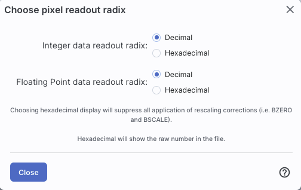
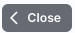
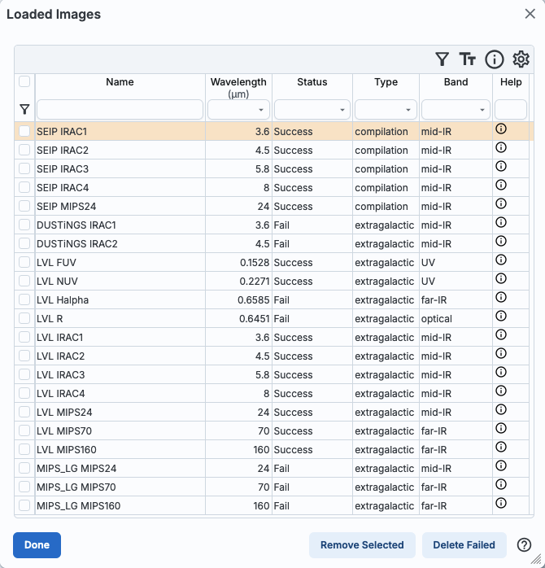
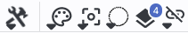
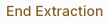
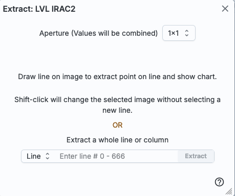
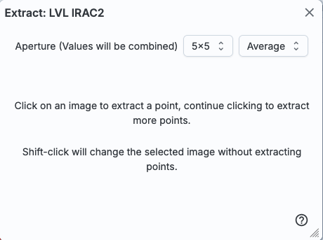
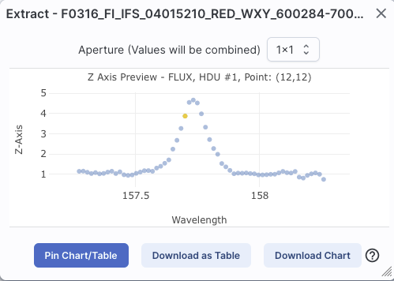
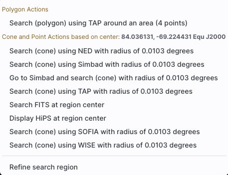

- Integer data readout in decimal
- Integer data readout in hexadecimal
- Floating point data readout in decimal
- Floating point data readout in hexadecimal
All of the interactive image visualization tools work the same basic way, and here we describe these basic options, in roughly the order in which you might encounter them in the window.
Contents of page/chapter:
+FITS/HiPS Viewer
+Image Information
+Breaking Out of the Pane (and Going Back)
+Image Navigation
+Image Toolbar
+Color Stretches
+Image Layers: Viewing/Changing the Layers on the Image
+World Coordinate System (WCS) Alignment
+Extraction Tools
+Region Selection
+Footprints
You can change the units of what is being read out, in terms of
coordinates or pixel values.
If you click on the label of the coordinates,
"EQ-J2000" in the screenshot example above, you get this pop-up, from
which you can choose the coordinates from among:
|
|  | If you have a FITS image loaded, you have an
additional readout. Click on the label of the readout, "Flux" in the
tiny snippet of a screenshot example above, and you get this pop-up,
from which you can choose the pixel readout from among:
|
| In the lower left of the images, if you click on this: , you get this pop-up. If you have a FITS image loaded, at the top of this pop-up, it shows the whole image; the orientation of the image is given with a compass rose. There is also a zoom-in of the image at the location under your cursor. Underneath that in the pop-up, whether you have a FITS or HiPS image loaded, you can get a readout of the pixel size, a readout of location on the image in two different coordinate systems, and a readout of the pixel value. You can change the units of those values by clicking on the name of the field: "Pixel Size", "EQ-J2000", "Image Pixel", and "Value". Each results in a pop-up, as above. |
You can make the cursor 'stick' on a particular place on the image --
flip the "Click Lock: off" switch to "on" (either in the pop-up or in
the lower right of the image window), and then click on the image at
your desired location. When this is clicked, small "clipboards" appear
near the position readout. Click on that icon to copy that position to
your clipboard.

Here are three examples of image labels. The first is from Spitzer Enhanced Imaging Products (SEIP), IRAC channel 4, which is 8 micron data, and the field of view is 12 arcmin. The second is from data delivered by the Local Volume Legacy (LVL) project, and it is from MIPS channel 3, which is 160 micron data; the field of view is 1.5 degrees. The third is also from the LVL project, but it is far-ultraviolet (FUV) data, and the field of view is 32 arcseconds.
 Images can have multiple planes;
the arrows allow you to page through the planes. (This is from the
HerMES project and is Herschel SPIRE 250 micron data.)
Images can have multiple planes;
the arrows allow you to page through the planes. (This is from the
HerMES project and is Herschel SPIRE 250 micron data.)
For HiPS images, the FOV is the angular size of the width of the HiPS viewer. Even if the image as displayed is smaller than the window, the FOV readout is the width of the window, not the image. If you shrink your browser screen, the FOV can get smaller because the viewer gets smaller. If you load more than one image, the FOV can get smaller because two viewers must fit in the same pane. As a result, the HiPS FOV requested in the search panel is approximate.
For FITS images, the FOV label on FITS images works analogously to the FOV label on HiPS images. If you zoom out, the FOV will increase even when the FITS image is entirely within the viewer. That's because the FOV is what the viewer can show you based on the pixel size. If you drag the image so that it is only partially seen through the viewer, the FOV will not change. For FITS images, the cutout size is not the same as the FOV.
 | The target on which you searched is overlaid on the main image with a cross-hair marker, sometimes called a "reticle." You can remove this (or change its color) from the layers pop-up, described below. |
Make it big! For some purposes, it is useful to
individually view just the table, or the images, or the plots, as
large as possible. In any pane, this icon  appears in the upper right of the pane.
Clicking on it will expand the pane into a larger window, as big as
possible given your browser size.
appears in the upper right of the pane.
Clicking on it will expand the pane into a larger window, as big as
possible given your browser size.
Go back the way it was:  The large "Close" arrow at the upper left is always available in the expanded views, and enables you to return back to the pane view.
Special case of images only: If you have only images loaded in, then the images are taking up all of your browser window, and it is already, by default, in this expanded mode. There's no 'close' arrow in the upper left since there is nothing else loaded in.
Removing things: To remove an image (or catalog) entirely, click on the small 'x' in the upper right of the image in the tiled view, or on the small 'x' in the corner of the catalog tab in the window pane view.
Note that you can also change the relative layout of the image, table, and plot panes from the side menu.
Also see the next section on image navigation.
 that portray (in icon form) the
different views you can have of the images you have loaded. The first
icon (the big square) denotes "show one image at a time." The second
icon (the cluster of four squares) denotes "show smaller images of all
the images I have loaded at once," e.g., tiled images. Whether the
images (tiled or not) take up all the space or not depends on whether
you are viewing in panes or in the full-screen mode (see immediately
above on Breaking out of the pane).
that portray (in icon form) the
different views you can have of the images you have loaded. The first
icon (the big square) denotes "show one image at a time." The second
icon (the cluster of four squares) denotes "show smaller images of all
the images I have loaded at once," e.g., tiled images. Whether the
images (tiled or not) take up all the space or not depends on whether
you are viewing in panes or in the full-screen mode (see immediately
above on Breaking out of the pane).

The power of this table is best demonstrated by an example.
Example: Load the tool. Search on M101, with the default image size.
Select all bands from the following data sets: SEIP, DUSTiNGS, LVL,
MIPS_LG. Search. When the tool comes back, click on the image list
icon above and obtain this pop-up:

This
table shows that it found images of M101 from SEIP, and some LVL
bands, but nothing in DUSTiNGS or MIPS_LG. You can use the table to
omit the failed images all at once. You can click on "Delete Failed"
on the bottom right, or you can do the following: click the down arrow
at the top of the "Status" column, tick the box next to "Success" and
then click "filter." The failed images are removed all at once from
the table and your display. Now, click the top of the "Wavelength"
column. The table is sorted by wavelength, and the images in your
display are sorted that way as well.
The "help" links in the far right of this table take you to a master list of all data sets available in Firefly, from which you can obtain standard information about the data sets (mission, wavelengths, links to more information about the program or delivery, and more).

⚠ Tips and Troubleshooting
This is the image toolbox when you have clicked on a FITS image you
have loaded:
And, this is the image toolbox when you have clicked on a HiPS image
you have loaded:

The two toolbars are different, but if the same icon appears, it has the same effect on the image. Many of the icons have a downward pointing black triangle, which means that there are additional options in a drop-down menu that appear when you click on the icon.
We now discuss each icon in the order in which they appear.
 Tools drop down
Tools drop down
 |
|
 Saving the image
Saving the image
If the current image is a FITS file, you can save it as a FITS or PNG
or regions file to your local disk. If it is a HiPS file, your only
choices are PNG or regions file. Saved FITS images will not save the
color stretches or overlays; it will just save the underlying FITS
image. Saved PNG files WILL include any overlays or annotations you
have placed on the image, but will not include the underlying FITS
image. Saved regions files will not save the underlying image, but
will just save the overlays as a DS9 Regions file. See the DS9
website  for more
information on the syntax of these DS9 region files.
for more
information on the syntax of these DS9 region files.
Note that you can save the original or a cropped version of a FITS
file; see the "select region" icon below to crop, then click on the
save icon. Be sure to save the cropped FITS image (see annotated
figure). This feature is not available for HiPS images.
Note that if you overlay a large catalog on an image, then turn around and save a regions file from the catalog overlay, the full catalog may not be saved to the regions file. If you have >5,000 sources, it's entirely likely that not every source will be overlaid on the image (because of hierarchical catalogs display), and thus will not be in the regions file. If you want to save your entire catalog as a regions file, save the catalog from the table pane.
The saved PNG is the same size as it is on your screen. If you want a big version, make the desired image big on your screen (view one-at-a-time; see here) before saving the PNG.
You can't save HiPS images from within IRSA's tool. To download your own copy, you will have to track down the original source of the image.
 Restoring everything to the
defaults
Restoring everything to the
defaults


For comparison, an example of the HiPS properties window is here:

 Rotating the image to any
angle
Rotating the image to any
angle
 Rotating the image so that North is
up
Rotating the image so that North is
up
 that appears
next to the image toolbar, or click on this icon a second time to remove
the distance tool. (You can also remove this layer via the layers
icon.)
that appears
next to the image toolbar, or click on this icon a second time to remove
the distance tool. (You can also remove this layer via the layers
icon.) ⚠ Tips and Troubleshooting: If you overlay a list of sources you created in ds9 regions format from your disk, it will only be overlaid on the current image, not all of the images you have loaded. If you want to have it overlaid on all the images you have loaded, create a catalog from your source list and overlay it as a catalog. Then it will appear on all of the images you have loaded, provided that the positions overlap on the sky.
 Put a marker on the image
Put a marker on the image 
 .
The dash-dot line around it means that it is 'active', so you can move
(click and drag the marker) or resize it (click and drag the dash-dot
boundary). You can change the color of the marker (and change the
label) via the "layers" icon (described below). You can also remove
this layer via the layers icon. There are several additional options
in the drop-down, enough that they have their own section below.
.
The dash-dot line around it means that it is 'active', so you can move
(click and drag the marker) or resize it (click and drag the dash-dot
boundary). You can change the color of the marker (and change the
label) via the "layers" icon (described below). You can also remove
this layer via the layers icon. There are several additional options
in the drop-down, enough that they have their own section below.
 Zooming in or out
Zooming in or out
If you click zoom in or out rapidly, a pop-up window appears to allow
you to more rapidly select the zoom level (field of view) you want.
Select the desired level, or click on the 'x' in the upper right to
make the window go away. Here is an example:
You can alternatively zoom using the mouse wheel (or drag forward and backward on a touchpad or magic mouse).
Note that there is a maximum (or minimum) allowed zoom level, and they are different for FITS and HiPS images. A notification will appear when you have reached the maximum (or minimum) allowed zoom level for a given image. To enlarge images more (or less) than that, please repeat your search to obtain new images with smaller (or larger) spatial extent. HiPS images are specifically designed for large areas, so if you need a big area, use HiPS. If you want to zoom in close enough to see individual original pixels, your best choice is FITS.
See also the section in the Images chapter on changing coverage images, specifically that on automatic transitions while zooming.
 Fit image to screen or fill
screen
Fit image to screen or fill
screen
By default, the images that are returned are frequently but not always centered on your search target. Clicking on these icons let you see the whole image that is returned, whether or not it is centered on your target.
This is available for both FITS and HiPS images, though note that FITS images retrieved from IRSA using this tool are typically square, and HiPS images cover the sky, so fitting the image to the screen might not be what you want to do.
 Zooming to a 1-to-1 size
Zooming to a 1-to-1 size
 |
|

Example of "Pan by table row" functionality: Load the tool. Search on M101, and ask for all SEIP channels (4 IRAC, 1 MIPS). When it returns, search on catalogs. Select a WISE/AllWISE catalog, and ask it for a polygon search covering the image that is loaded. When the catalog loads, go up to the image toolbox and be sure to select Align and Lock by WCS (see WCS Alignment below for more information). Sort the catalog by RA by clicking on the top of the RA column. Note that the images are all now slewed to center the first object (the furthest east) in the catalog. Click on a source in the plot near the west edge of the image. Note that the images are all now slewed to center that newly selected source.
Other choices are to center on the target of the observation, center the image in the window, or center on a target of your choice. For the last of those, you can simply center on that target, or center and leave a marker on the image at that location.
That last option may or may not appear, depending on what you have been doing before getting to this screen. If it can, it gives you a choice to center on recent positions. Move your mouse over to the arrow to select from a list.
 Selecting a region drop down
Selecting a region drop down
 Image Layers: Viewing/Changing the
Layers on the Image
Image Layers: Viewing/Changing the
Layers on the Image

 Getting help
Getting help

Example: Display the pop-up for color stretch. From the main drop-down, pick 'Linear stretch to 99%'. Go back to the color stretch pop-up. Note that it has filled out the stretch type and ranges to reflect the current choice. Then -- either with the pop-up window still up or not -- go back and pick a different pre-defined stretch from the standard options. Note that the values in the pop-up change to reflect this current choice. From the pop-up, pick a different stretch type -- try "histogram equalization." Select "refresh" to update the images. Go back to the drop-down menu. The last 7 items have changed to be based on histogram equalization, as opposed to the "linear" default.
If you have a 3-color image, you can change the stretch in each color plane separately; select the tab at the top accordingly for red, green, or blue. By default, it stretches each band independently, and you can set the parameters in the stretch pop-up accordingly.
As described in Lupton et al. (2004)  , a different algorithm may be useful for creating
3-band color images. Select "Hue preserving stretch" to invoke this
option. This stretch should be a brightness-independent
color-preserving asinh stretch, though in practical terms, it seems to
work best for optical images.
, a different algorithm may be useful for creating
3-band color images. Select "Hue preserving stretch" to invoke this
option. This stretch should be a brightness-independent
color-preserving asinh stretch, though in practical terms, it seems to
work best for optical images.

It may be useful to scale individual channels; sliders allow you to do so. The Q parameter has another slider. For a linear stretch, Q=0; increase Q to change what features are emphasized. Pedestal values can also be set to allow the level assigned to "black" to change.
The number that appears circled in blue
over the layers icon tells you at any given time how many layers you
have on the currently selected image (the image outlined in brown).
If you click this layers icon, you will get a pop-up
window with a list of all the layers you have on top of the image.
Here (on the right) is an example of a well-populated layers pop-up;
in real life, this is scrollable to see several more layers). From
this pop-up, you can:
You can "show all" or "hide all" with the buttons on the lower left of the pop-up window. To make this pop-up window go away, click on the 'x' in the upper right of the pop-up.
Note the target description: |  |
| Where it's possible to change colors of a
layer, click on the 'colors' link to be taken to a new pop-up from
which you can select a new color. From here, you can click on your desired color in the top colorful box. Immediately below that box, you can change the color and saturation of the top box so that you can select from a different range of colors. Below that, you can enter numerical hex codes or RGBA values (where the value for RGB is between 0 and 255, and A is in units of percent, e.g., 50 = 50%). Finally, you can also select from a pre-defined set of 15 colors by clicking on any of the small boxes. Note that the numerical codes update as you select different colors. Your choices are implemented as soon as you select them. Click 'Close' to close the window, or click 'x' in the upper right. |
 |
| For catalogs or the search target, you can
also select the symbol shape and size. To adjust the size, type in the
symbol size in pixels or use the up/down arrow keys to change the size
by one pixel at a time. Your choices are implemented as soon as you
select them. Click 'Close' to close the window, or click 'x' in the
upper right.
|
 |
Note that if you load both FITS and HiPS images at the same time, it
can include a marked layer on the HiPS image that is the footprint of
the FITS images you have loaded. A label appears at the center of that
footprint, which may be disconcerting if you are not zoomed out enough
to see the region itself. Here is an example, zoomed out so it is
clear what is going on:

Once you have loaded a HiPS image into Firefly, if you select
the HiPS image and click on the layers icon (), you will have new, HiPS-specific choices in the
layers:
Auto: This option overlays a position grid, with the
tile numbers marked in the center of each box. As you continue to zoom
in, when smaller tiles are needed, they are drawn, with the new tile
numbers marked. You may not zoom beyond HiPS Norder level 14 tiles.
The numbers after the "/" is in the "NESTED" (as opposed to RING or
NUNIQ) numbering system; see the IVOA
standards document  for
more information.
for
more information.
Grid Match Image Depth: If you select this option, the grid will adjust to a new level when you zoom in and a new level of HiPS image both exists and is used for the display.
Grid Level Lock: Selecting this option yields an additional numerical drop-down menu. The higher number you pick, the smaller the grid boxes are that are drawn. When this option is selected, the boxes stay the same size regardless of how zoomed-in on the image you are.
(See here for more information on MOCs in general.) A MOC tells you via a simple boolean yes/no, is there sky coverage from this data set in this region. The choices here are:
When aligning images, you can specify how the images align and for
how long. Clicking the lock images icon produces this drop-down
menu:
The first set of options aligns the images only once; the second set of options makes the alignment persist ("lock") when you move (zoom, etc.) the images.
You can align by the images' WCS (world coordinate system, e.g., RA and Dec), by the target (align by target on the screen, regardless of position in the sky), by the pixels according to the origin of the coordinate system in the image header, or by the pixel at the image center. The most common choice is likely the WCS align and lock.
Here are examples of different alignments, in this order: align by
WCS, by pixel origin, and by pixel at image centers.

Note that aligning by WCS puts North up, and aligned so that each image has the same angular scale.
In contrast, here is an align
by target - six different galaxies, but the target used for each
image is in the center of each image tile.
Aligning images by position on the sky is likely to be the most common use of locking. You can align FITS and HiPS images to each other.
Here, we cover the basic approach, with specifics of each tool integrated as we go along.
When you click on one of these icons, you enter into the extraction mode. Text appears next to the image toolbar to remind you that you are in this mode:  When you are done, to end this mode, click on this "end extraction."
When starting out, the pop-up window that you get depends on the tool you pick.
| For the drill: | for the line: | and for the points: |  |
 |  |
From this point, you can click on your image, or click and drag for the line tool. The pop-up then contains a plot of your extraction.
| For the drill: | for the line: | and for the points: |  |  |
Note that for the line, if you have more than one image loaded and visible, you can shift-click on a new image to see the same line on a new image. And, for the points, you can shift-click to change images without extracting points.
Once you have an extraction that you like, you can retain the extraction for further analysis, in any of three ways. "Pin chart/table" extracts the information as a table, just like any of the other tables in this tool, with an accompanying plot. You can then manipulate the table/plot just like any other table or plot in this tool. If the tool recognizes the extraction as a spectrum, you may have additional capabilities. Download as Table saves the table to your local disk with all the same options as a regular table. Download Chart saves the plot as shown, as a png file.
Once you pin or save your extraction, the tool leaves a "footprint" of
your extraction on the image so that you can remember what the
extraction was. NOTE THAT it is not interpolating
across fractional pixels here. It is averaging if you have asked it to
average, but particularly if your pixels are
large, if you draw a line that is diagonally across pixels, it will be
immediately obvious that it's not interpolating. This line gets
rendered as these pixels:

The point appears on the image at the lower left corner of the
relevant pixel.
You can pin as many different extractions as you want. Each one will result in new tabs with the corresponding table at the bottom of the screen. There are navigation aids within the tables section that may help.
When you click this icon, you can
select a region of the image, from which then you can do a whole host
of things to the image and to the catalog you may have overlaid upon
it.
| First, from the drop-down, you are given a choice of a rectangular selection or an elliptical selection: |
When you have selected a region of the image, additional icons
appear above the image, and exactly which icons you see is a function
of whether you are working on a FITS or HiPS image, and whether or not
you have a catalog overlaid:  These
icons allow you to do several things:
These
icons allow you to do several things:
 Crop the image
Crop the image
Note that, if you have a rotated FITS image such that
a crop would have to bisect pixels, it will show you the region that
encompasses your selection. If you crop at that point, then, it will
crop in image space (such that pixels are not bisected). See the
figure below -- in the original image, north is up. This has been
rotated 45 degrees. The selected region is in white. The yellow
dash-dot line is the crop in pixel space that encompasses the selected
region.

 Select sources (and cancel
selection)
Select sources (and cancel
selection)
 Filter sources
Filter sources
 ). To clear the filters, click on the
cancel filters icon (which also appears after you impose filters):
. There is much more on filters in the Tables section.
). To clear the filters, click on the
cancel filters icon (which also appears after you impose filters):
. There is much more on filters in the Tables section.
 Zoom the image
Zoom the image
 Recenter the image
Recenter the image
 Obtain statistics
Obtain statistics

This tool implements a new search, an "action", on the region
you have selected. It results in this drop-down (right).
where this example is based on a region centered on
84.036131, -69.224431, J2000 decimal degrees, over a 4-cornered polygon.
(You can also use the region tool to define a cone; this example
happends to be a rectangle.)
From this drop-down, you can launch:
|  |
) has a drop-down menu with
several possible options:
For each of these choices, the markers appear initially in the center of the loaded images. The first mouse click you make in any of the images will move the marker to that location.
Each of these marker choices, when overlaid and/or selected as
'active', has a dot-dash square around it. If it is asymmetrical (most
of them are), it has an additional "appendage" and a red plus at the
center of the footprint:
These so-called "handles" allow you to resize and/or rotate the
marker, depending on the nature of the marker. These handles only
appear when the marker is selected as active; if you wait a few
seconds, they vanish.
⚠ Tips and Troubleshooting
The first overlay choice (simply
called 'marker') is a red circle.
The remaining markers are all footprints from various telescopes:
Spitzer, SOFIA, HST, JWST, and Roman. HST, JWST and Roman are derived
from information provided via MAST (see http://gsss.stsci.edu/webservices/footprints/help.html
 .) For JWST and Roman in
particular, they are pre-launch values.
.) For JWST and Roman in
particular, they are pre-launch values.
Spitzer/IRAC 3.6 and 4.5 micron footprints. These two footprints are placed separately from each other. The footprint can be moved or rotated. Click and drag the center of the footprint. A circle appears with four small circles ("handles") around it. Grab and drag the small circles to rotate it, or drag the big circle to move it. Change the color, delete, or add more copies of the IRAC footprints from the layers pop-up.
 SOFIA footprints.
Several different SOFIA footprints are available; the graphic here
shows a selection of them. The available footprints (all of which are
placed separately) are:
SOFIA footprints.
Several different SOFIA footprints are available; the graphic here
shows a selection of them. The available footprints (all of which are
placed separately) are:
HST footprints.
You can overlay the whole focal plane footprint, shown here, or
individual instrument footprints (NICMOS, WFPC2, ACS/WFC, ACS/HRC,
ACS/SBC, WFC3/UVIS, and WFC3/IR). Consult the HST documentation  for specifics on which apertures are which. The
footprint can be moved or rotated. Click and drag the center of the
footprint. A circle appears with four small circles ("handles") around
it. Grab and drag the small circles to rotate it, or drag the big
circle to move it. Note that if you overlay the
footprint on a very small image, nothing will appear to have happened.
You need at least a 45 arcmin image to comfortably see the footprint.
Change the color, delete, or add more copies of the HST footprints from
the layers pop-up.
for specifics on which apertures are which. The
footprint can be moved or rotated. Click and drag the center of the
footprint. A circle appears with four small circles ("handles") around
it. Grab and drag the small circles to rotate it, or drag the big
circle to move it. Note that if you overlay the
footprint on a very small image, nothing will appear to have happened.
You need at least a 45 arcmin image to comfortably see the footprint.
Change the color, delete, or add more copies of the HST footprints from
the layers pop-up.
JWST footprints.
You can overlay the whole focal plane footprint, shown here, or
individual instrument footprints (FGS, MIRI, NIRCAM, NIS, and NIRSPEC).
Note that if you overlay the footprint on a very
small image, nothing will appear to have happened. You need at least a
30 arcmin image to comfortably see the entire JWST focal plane. Please
consult the JWST
documentation  for details
about the footprints. In all cases, if the footprint is 'active', a
circle near the middle of the footprint will appear with four small
circles ("handles") around it. Grab and drag the small circles to
rotate it, or drag the big circle to move it. Change the color,
delete, or add more copies of the footprints from the layers pop-up.
for details
about the footprints. In all cases, if the footprint is 'active', a
circle near the middle of the footprint will appear with four small
circles ("handles") around it. Grab and drag the small circles to
rotate it, or drag the big circle to move it. Change the color,
delete, or add more copies of the footprints from the layers pop-up.
 Nancy Grace Roman Space Telescope
focal plane footprint. As above, the footprint can
be moved or rotated. Click and drag the boresight (the cross hairs),
which appears by default to the upper right of the array of squares.
A circle appears, centered on the boresight, with four small circles
("handles") around it. Grab and drag the small circles to rotate it,
or drag the big circle to move it. Note that if you
overlay the footprint on a very small image, nothing will appear to
have happened. You need at least a 60 arcmin image to comfortably see
the footprint, and even then you will probably have to click and drag
to see the entire footprint. Consult the Roman
documentation
Nancy Grace Roman Space Telescope
focal plane footprint. As above, the footprint can
be moved or rotated. Click and drag the boresight (the cross hairs),
which appears by default to the upper right of the array of squares.
A circle appears, centered on the boresight, with four small circles
("handles") around it. Grab and drag the small circles to rotate it,
or drag the big circle to move it. Note that if you
overlay the footprint on a very small image, nothing will appear to
have happened. You need at least a 60 arcmin image to comfortably see
the footprint, and even then you will probably have to click and drag
to see the entire footprint. Consult the Roman
documentation  for
specifics on the apertures. Change the color, delete, or add more
copies of the Roman footprint from the layers pop-up.
for
specifics on the apertures. Change the color, delete, or add more
copies of the Roman footprint from the layers pop-up.
 Add a compass rose
Add a compass rose  Pin image
Pin image  This reminds you of the target on which
you searched -- here, it was M101, where the coordinates were resolved
by NED (as opposed to Simbad). The two icons next in that row
indicate, respectively, "copy this location to the clipboard" and
"center image on this position."
This reminds you of the target on which
you searched -- here, it was M101, where the coordinates were resolved
by NED (as opposed to Simbad). The two icons next in that row
indicate, respectively, "copy this location to the clipboard" and
"center image on this position."